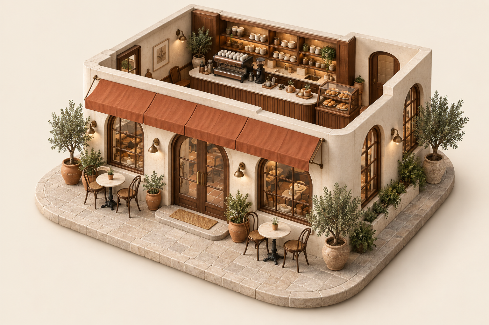
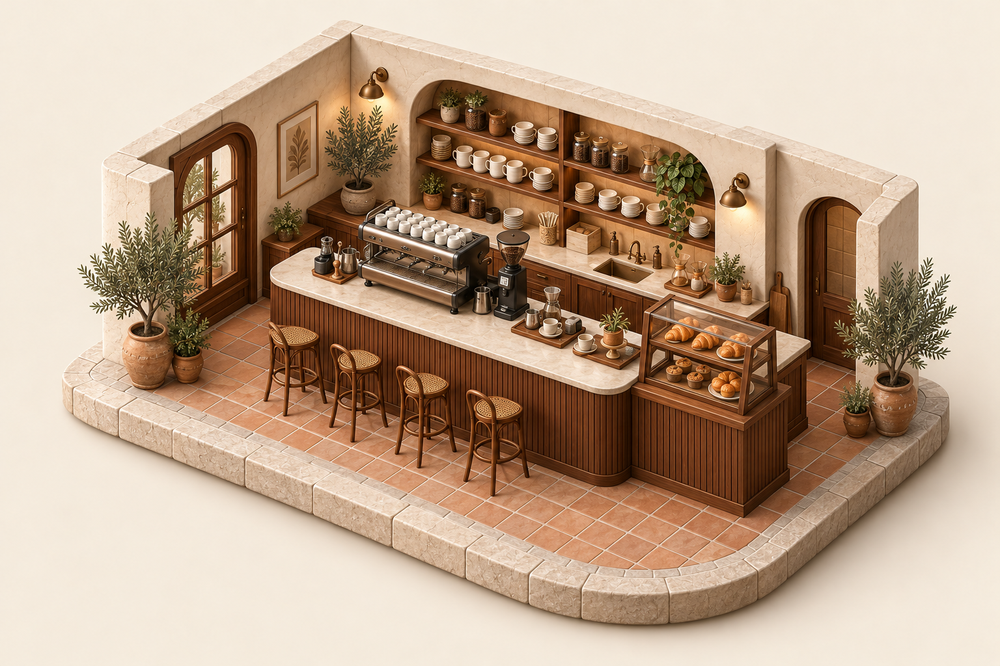
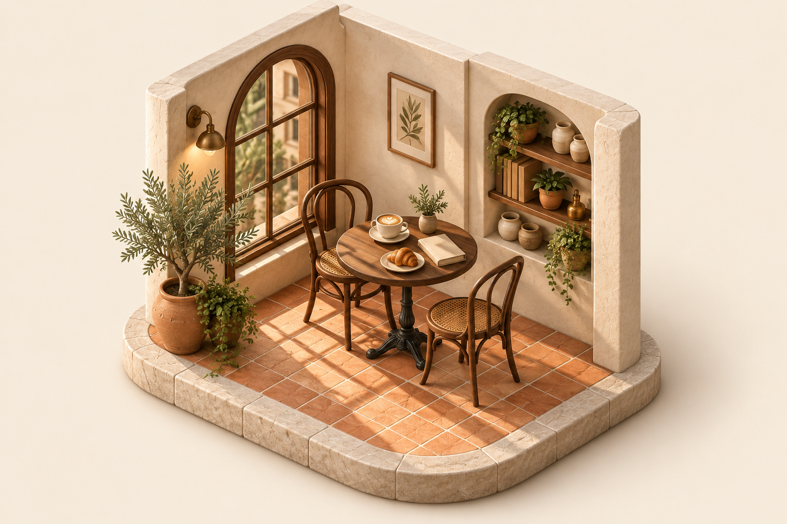
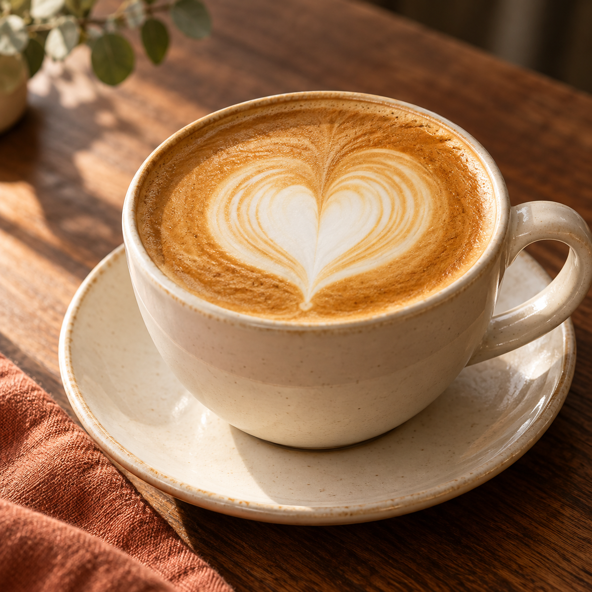
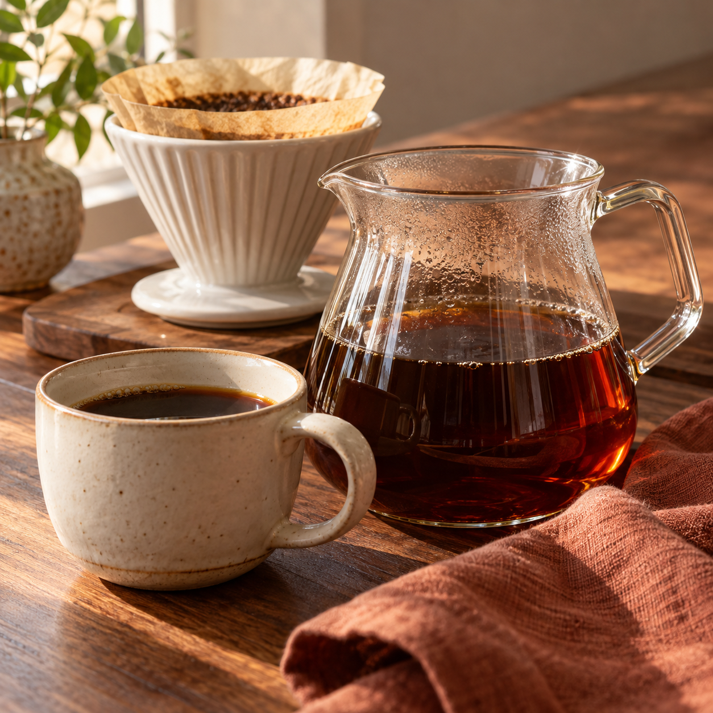
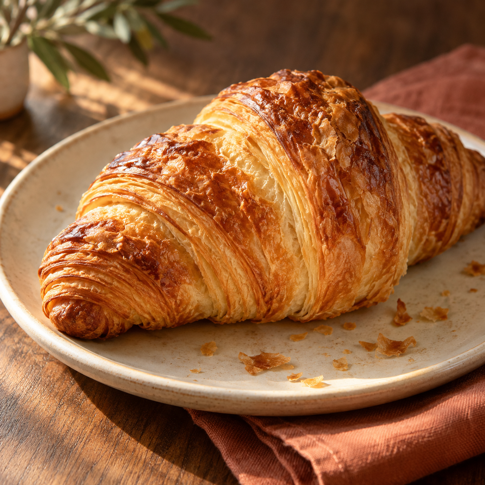
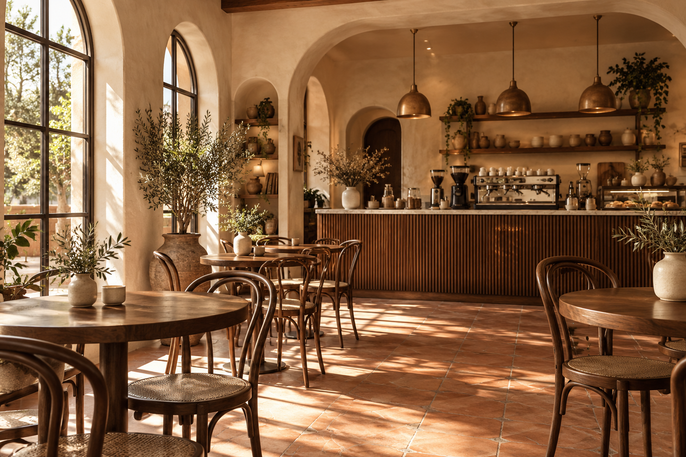

Dirección creativa · 12 octubre 2026 · concepto local
Bruma Café.
Un pequeño refugio. Editorial cálida, materiales tangibles y un mundo para descubrir con calma.
La paleta
Crema
#F3ECE0
Espresso
#2B1B14
Terracota
#A64B35
Salvia
#6A7559
Papel
#FFF9F0
La voz y la letra
Fraunces · títulos · 400 / 500
Un café.
Un momento para ti.
Manrope · texto · 400 / 600
Un pequeño refugio donde el café se prepara con calma y cada pausa sabe un poco mejor.
Un lugar. Tres momentos.
Dioramas isométricos con el mismo ángulo, materiales y luz. La fachada presenta; la barra cuenta el ritual; la mesa invita a quedarse.



La fotografía




Wireframes y ritmo
Movimiento con calma
Escritorio: tres escenas, crossfade y zoom leve, sin tomar control del scroll. Móvil: lectura apilada. Con movimiento reducido o sin JavaScript, todo permanece visible. Las imágenes son originales generadas con IA para una marca conceptual.